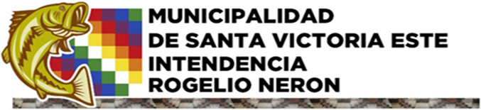

Portal institucional y territorial
Municipalidad de Santa Victoria Este
Corazón del Chaco salteño, a la vera del Río Pilcomayo. Un municipio multicultural de encuentro, tradición y desarrollo comunitario.
Información del municipio
Ubicación estratégica e identidad local

Servicios
Accesos principales
Trámites municipales
Información para solicitudes, certificados, permisos y gestión administrativa.
Noticias y comunicados
Novedades oficiales, actividades institucionales y avisos para vecinos y comunidades.
Atención ciudadana
Canales de contacto para consultas, reclamos y orientación municipal.
Cultura y comunidades
Diversidad cultural y pueblos originarios
Santa Victoria Este posee una riqueza humana única. En su territorio conviven familias criollas y comunidades de pueblos originarios como Wichí, Chorote, Qom, Chulupí y Quechua.
Su ubicación en el extremo noreste salteño, cerca del punto tripartito entre Argentina, Bolivia y Paraguay, fortalece su rol como espacio de integración cultural y fronteriza.
Chaco salteño y Río Pilcomayo
Este bloque queda preparado para sumar fotografías propias, historia local, mapas, programas territoriales y materiales institucionales.
Evento anual - Mayo
Fiesta de la Cultura Nativa
Encuentro solidario y de integración cultural impulsado junto a la comunidad. Reúne música, salud, deporte y acciones para contribuir al bienestar de los habitantes locales.
Territorio
Datos climáticos de referencia
Contacto
Atención al vecino
Canales institucionales para consultas, trámites, reclamos y orientación municipal.
Sede municipal: San Martín s/n, Santa Victoria Este
Departamento: Rivadavia, Salta
Teléfono: 03875-490126
Correo: contacto@santavictoriaeste.gob.ar